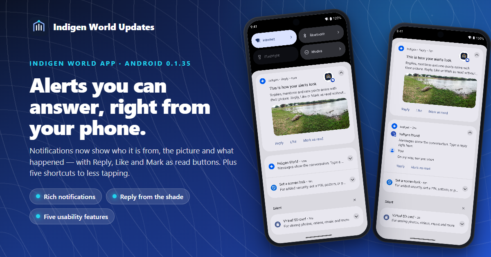
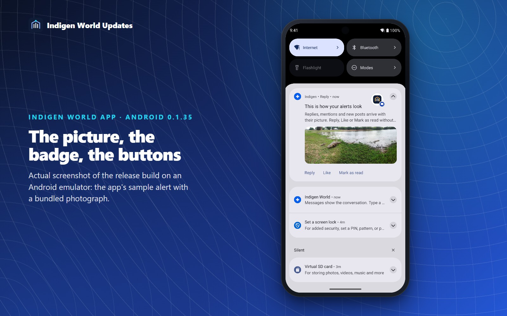
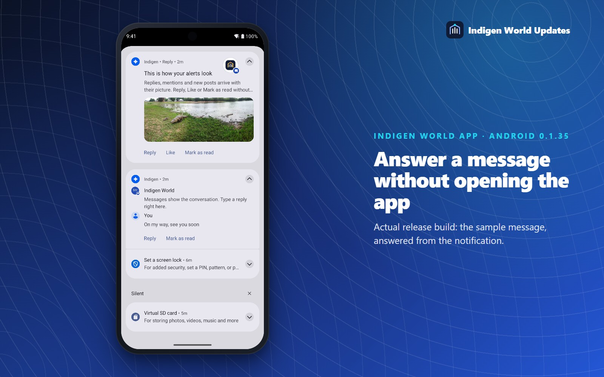
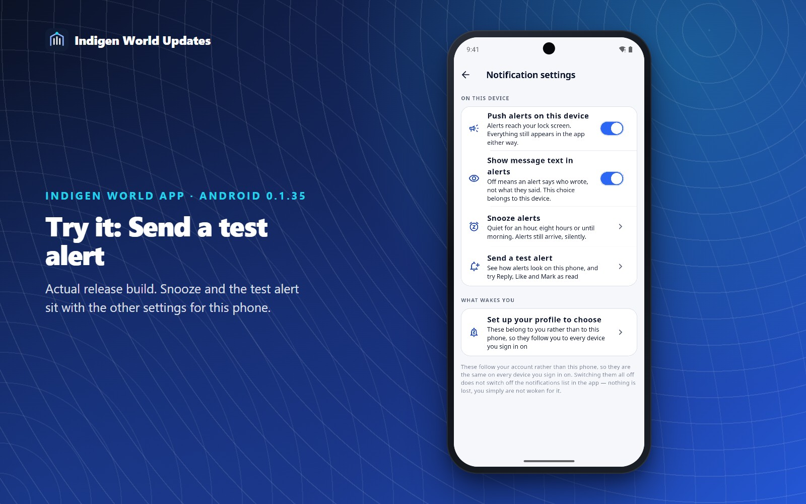
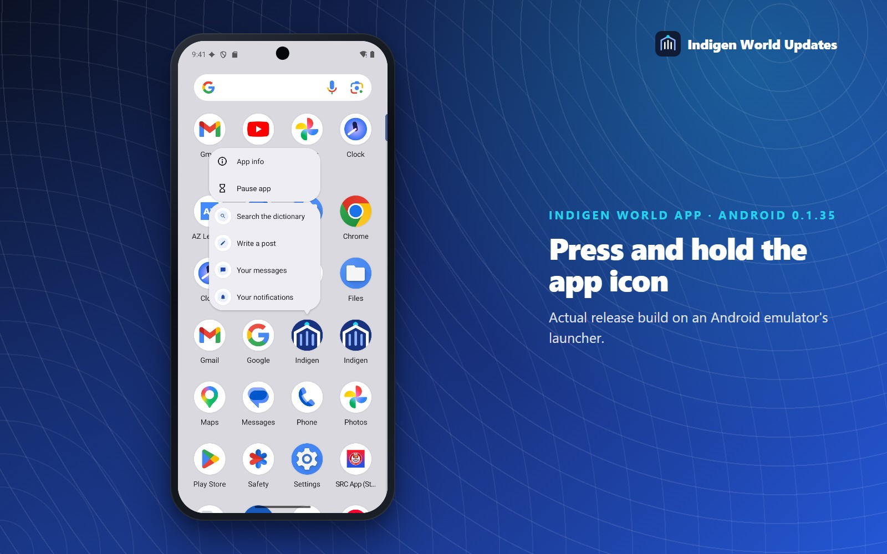
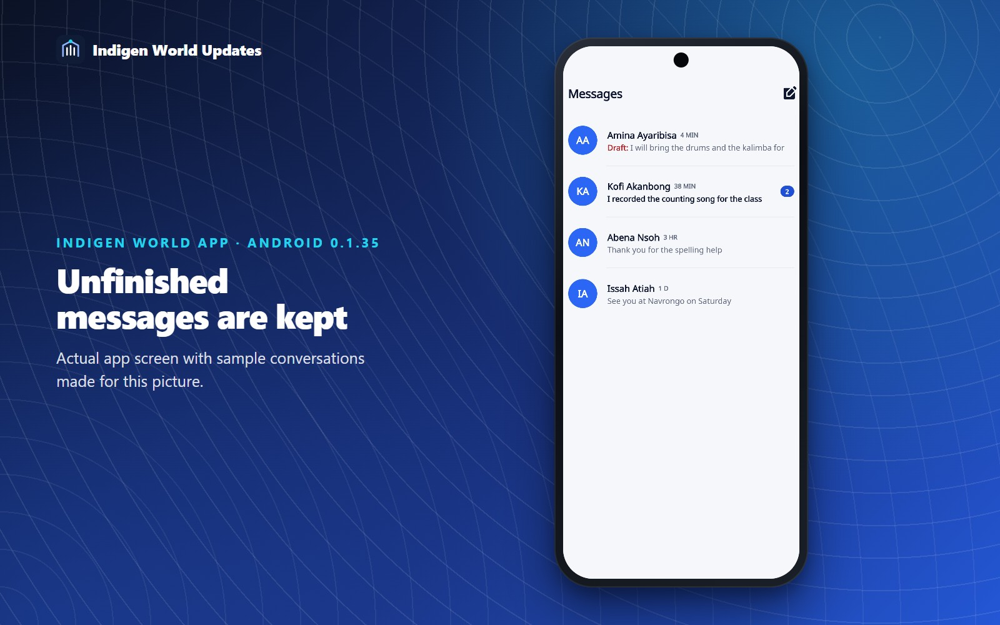
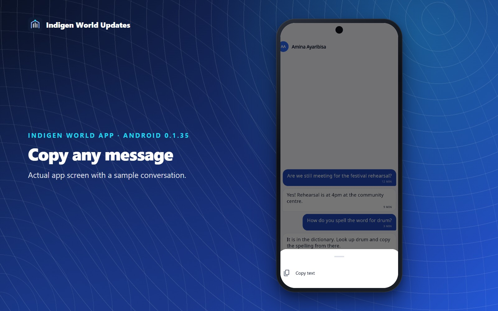
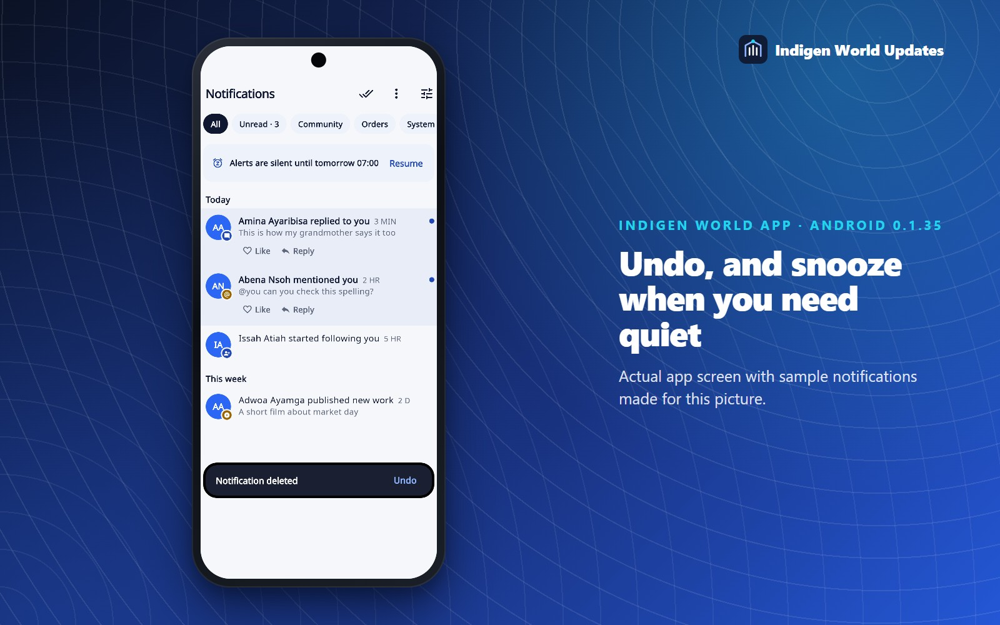

Your phone's notifications now look like the notifications screen inside the Indigen World app: you see who it is from, the picture it is about and what happened, and you can reply, like or mark it as read without opening the app. This update also adds five smaller changes that save taps every day.
Status — 25 October 2026. Built and tested as Android version 0.1.35 (build 44). It is not in the Play Store yet. The new notification design also needs a server update before it reaches phones. Until both are done, the app you have works exactly as before.
Until now, an Indigen World notification on your phone was a title, one line of text and the app's icon. The same alert inside the app had much more: the person's photo, a small coloured badge saying what happened, the picture from the post, and Like and Reply buttons. If you only looked at your phone's notification shade, you got the plainer version.
From 0.1.35 the shade shows the app's design:

Alerts now have buttons, the same ones the notifications screen in the app offers:
After you press a button, the alert tells you what happened: Liked, Reply sent, or Sending when you are online if your phone has no connection. A reply is saved on your phone and goes out when you are back online.
A direct message now appears as a short conversation with the sender's photo. Reply from the notification and your answer appears underneath theirs, so you can have a quick back-and-forth without opening the app. Mark as read clears the conversation's unread count.

When two or more alerts arrive, they fold into one group with a count, such as 3 new alerts, and a Mark all as read button. Messages, community activity and updates about your own work (orders, reviews, payments) are kept in separate groups. And when you read something inside the app, its alert disappears from the shade.

Try it yourself. In the app, open Notifications → ⚙ Alert settings → Send a test alert. Two sample alerts appear in your shade: a reply with a picture and a message. Their buttons work, but nothing is posted anywhere.
Press and hold the Indigen World icon on your home screen for four shortcuts: Look up opens the dictionary with the keyboard ready, New post opens the composer, and Messages and Alerts go straight to your inbox and notifications. You can drag any of them onto your home screen as its own icon.

If you leave a conversation in the middle of a sentence, to check a word or answer a call, what you typed is still there when you come back. The Messages list shows Draft: in red next to any conversation with an unsent message, so it is not forgotten. Drafts stay on your phone and are kept separately for each account.

Press and hold any message in a conversation, whether yours or theirs, and choose Copy text. Kasem spellings, phone numbers and directions can now be copied. Delete is still offered for your own messages.

Swiping a notification away used to ask "Delete this notification?" every time. Now it simply goes, with an Undo button for five seconds. Clearing your whole notification history still asks first.

In a meeting, a church service or a class? Choose Snooze alerts from the menu on the notifications screen, or from Alert settings, and pick For 1 hour, For 8 hours or Until tomorrow morning (7:00). Alerts still arrive and wait in your shade, but they make no sound and do not pop up. A banner shows when snoozing ends, with a Resume button. Snoozing applies to the phone you set it on. The existing quiet hours setting is different: it holds alerts back every night at times you choose.
If you turn off Show message text in alerts in Alert settings, your lock screen shows neither the words, the person's photo nor the picture, only that there is something new.